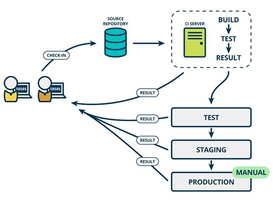
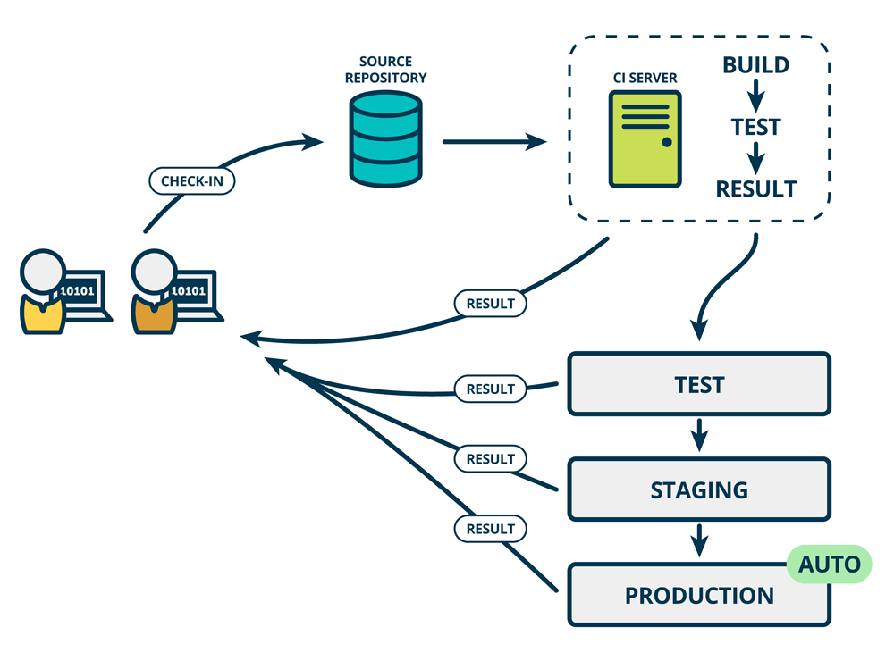

DevOps 与 CICD 详解
DevOps
DevOps 是 Development（开发）和 Operations（运维）的组合，是一种方法论，是一组过程、方法与系统的统称，用于促进应用开发、应用运维和质量保障（QA）部门之间的沟通、协作与整合，以期打破传统开发和运营之间的壁垒和鸿沟；
DevOps 是一种重视软件开发人员（Dev）和IT运维技术人员（Ops）之间沟通合作的文化、运动或惯例，通过自动化软件交付和架构变更的流程，来使得构建、测试、发布软件能够更加地快捷、频繁和可靠；具体来说，就是在软件交付和部署过程中提高沟通与协作的效率，旨在更快、更可靠的的发布更高质量的产品；
也就是说 DevOps 是一组过程和方法的统称，并不指代某一特定的软件工具或软件工具组合；各种工具软件或软件组合可以实现 DevOps 的概念方法，其本质是一整套的方法论，而不是指某种或某些工具集合，与软件开发中设计到的 OOP、AOP、IOC（或DI）等类似，是一种理论或过程或方法的抽象或代称。

CI
CI 的英文名称是 Continuous Integration，中文翻译为持续集成；CI 中，开发人员将会频繁地向主干提交代码，这些新提交的代码在最终合并到主干前，需要经过编译和自动化测试流进行验证；
持续集成 CI 是在源代码变更后自动检测、拉取、构建和进行单元测试的过程，持续集成的目标是快速确保开发人员新提交的变更是好的，并且适合在代码库中进一步使用；CI 的流程执行和理论实践让我们可以确定新代码和原有代码能否正确地集成在一起。

CD
CD 对应多个英文名称，持续交付 Continuous Delivery 和持续部署 Continuous Deployment，以下分别介绍。
持续交付（Continuous Delivery）
完成 CI 中构建及单元测试和集成测试的自动化流程后，持续交付可自动将已验证的代码发布到存储库；为了实现高效的持续交付流程，务必要确保 CI 已内置于开发管道，持续交付的目标是拥有一个可随时部署到生产环境的代码库。
在持续交付中，每个阶段（从代码更改的合并，到生产就绪型构建版本的交付）都涉及测试自动化和代码发布自动化；在流程结束时，运维团队可以快速、轻松地将应用部署到生产环境中或发布给最终使用的用户。

持续部署（Continuous Deployment）
对于一个成熟的 CI/CD 管道来说，最后的阶段是持续部署；作为持续交付（自动将生产就绪型构建版本发布到代码存储库）的延伸，持续部署可以自动将应用发布到生产环境；
持续交付意味着所有的变更都可以被部署到生产环境中，持续部署意味着所有的变更都会被自动部署到生产环境中，但是出于业务考虑可以选择不部署；如果要实施持续部署，必须先实施持续交付；
持续交付并不是指软件每一个改动都要尽快部署到产品环境中，它指的是任何的代码修改都可以在任何时候实施部署；持续交付表示的是一种能力，而持续部署表示的则一种方式。持续部署是持续交付的最高阶段

CI、CD、DevOps 关系
DevOps 是 CI、CD 思想的延伸，CI、CD 是 DevOps 的基础核心，如果没有 CI、CD 自动化的工具和流程，我们谈 DevOps 是没有意义的；概念性的内容，每个人的理解都有所不同，都没有问题，咬文嚼字过犹不及，留下一图：